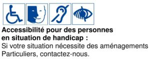
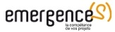
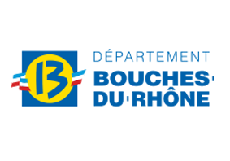
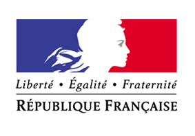
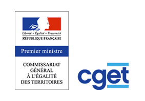
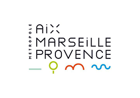
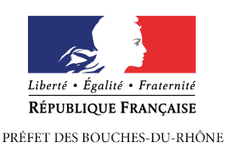
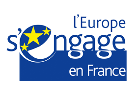
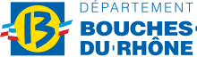
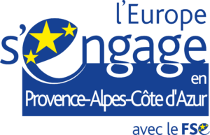

Unité Emploi
Elle rassemble les actions d’accompagnement ou d’accès direct à l’emploi. Elle est menée par des conseillers qualifiés. Ils suivent collectivement et individuellement les demandeurs d’emploi.
Les objectifs :
- Levée des freins,
- Remise en action (stage, immersion, rencontre entreprise, ect …),
- Travail exclusif avec les partenaires institutionnels et le réseau développé depuis 1993.
Le bilan de cette unité en fin d’actions avoisine les 80% de sorties positives.

Marchés publics
PLIE MPM
Le PLIE MPM est un dispositif territorial d’accompagnement individualisé d’accès à l’emploi des personnes qui en sont éloignées. Le CIERES prend en charge 3 prestations d’accompagnement à l’emploi sur ce dispositif animé par 3 conseillers en insertion professionnels.
Public demandeur d’emploi, de niveau infra-bac souhaitant être accompagné dans ses démarches de recherche d’emploi.
 120 personnes en file active à l’année. Action annuelle renouvelable
120 personnes en file active à l’année. Action annuelle renouvelable
Fiche mise à jour le 14/04/2023
 Lieu de l’action : CIERES – 15 rue du terras 13002 Marseille
Lieu de l’action : CIERES – 15 rue du terras 13002 Marseille
 Contact : Claude GASSIER
Contact : Claude GASSIER

ACIADE
Action collective intermédiaire pour un accès durable à l’emploi des bénéficiaires du RSA des Pôles d’insertion du 13,14 et 15,16 arrondissements de Marseille.
Cette action s’articule autour d’un projet collectif permettant de construire un parcours individualisé vers l’emploi et de découvrir la culture de l’entreprise.
RSA, Habitants rattachés aux Pôles d’Insertion des 13/14ème et 15/16ème arrondissements de Marseille, souhaitant trouver un emploi ou une formation qualifiante
 Action annuelle renouvelable.
Action annuelle renouvelable.
14 semaines, 252 heures maximum, 18 à 30h hebdomadaire, 12 places par session
 Lieux de l’action :
Lieux de l’action :
13/14ème : Centre social des Flamants 10 avenue Alexandre Ansaldi 13014 Marseille
15/16ème : 43 avenue de la Viste 13015 Marseille
Fiche mise à jour le 14/04/2023
 Contact : Sonia GARA
Contact : Sonia GARA

Prestations – Subventions
AGIR ENSEMPBLE POUR L’EMPLOI (13e)
L’action AGIR 13 permet de remettre en contact les publics du 13ème avec le monde socioéconomique.
Habitants des Quartiers Prioritaires du 13ème arrondissement, de 18 ans à 64 ans, souhaitant trouver un emploi ou une formation et ayant des difficultés à effectuer les démarches.
 Action annuelle renouvelable. 30 places en entrées et sorties permanentes
Action annuelle renouvelable. 30 places en entrées et sorties permanentes
Sans délai d’accès dans la limite des places disponibles
Action gratuite
Fiche mise à jour le 14/04/2023
 Lieux de l’action : Différentes permanences sur le territoire du 13ème arrondissement de Marseille (Plateforme Jeune de Rose, Maison France Service de Malpassé)
Lieux de l’action : Différentes permanences sur le territoire du 13ème arrondissement de Marseille (Plateforme Jeune de Rose, Maison France Service de Malpassé)
 Contacts : Martin DUCASSE
Contacts : Martin DUCASSE
 
AGIR ENSEMBLE POUR L’EMPLOI (14e)
L’action AGIR 14 permet de remettre en contact les publics du 14ème avec le monde socioéconomique.
Habitants des Quartiers Prioritaires du 14ème arrondissement, de 18 à 64 ans, souhaitant trouver un emploi ou une formation et ayant des difficultés à effectuer les démarches.
 Action annuelle renouvelable. 60 places en entrées et sorties permanente
Action annuelle renouvelable. 60 places en entrées et sorties permanente
Sans délai d’accès dans la limite des places disponibles
Action gratuite
Fiche mise à jour le 14/04/2023
 Lieux de l’action : Différentes permanences sur le territoire du 14ème arrondissement de Marseille (Centre social des Flammants IRIS, Centre social de St Gabriel et Centre social du Grand-Canet)
Lieux de l’action : Différentes permanences sur le territoire du 14ème arrondissement de Marseille (Centre social des Flammants IRIS, Centre social de St Gabriel et Centre social du Grand-Canet)
 Contacts : Martin DUCASSE
Contacts : Martin DUCASSE
AGIR ENSEMBLE POUR L’EMPLOI (Centre Ville)
L’action AGIR Centre permet de remettre en contact les publics du Centre ville avec le monde socioéconomique.
Habitants des Quartiers Prioritaires des 1, 2 et 3èmes arrondissements, de 18 à 64 ans, souhaitant trouver un emploi ou une formation et ayant des difficultés à effectuer les démarches.
 Action annuelle renouvelable. 30 places en entrées et sorties permanentes
Action annuelle renouvelable. 30 places en entrées et sorties permanentes
Sans délai d’accès dans la limite des places disponibles.
Action gratuite
Fiche mise à jour le 14/04/2023
 Lieu de l’action : CIERES – 15 rue du Terras – 13002 Marseille
Lieu de l’action : CIERES – 15 rue du Terras – 13002 Marseille
 Contact : Martin DUCASSE
Contact : Martin DUCASSE
ESCAL’EMPLOI
L’action ESCAL’Emploi permet de remettre en contact les publics du 15ème arrondissement avec le monde socioéconomique.
Habitants des quartiers prioritaires du 15ème arrondissement, âgés de 18 à 64 ans en recherche de formation qualifiante ou d’emploi, trop éloignés de l’emploi par l’accumulation des freins périphériques pour pouvoir intégrer un dispositif d’accompagnement de droit commun.
 Action annuelle renouvelable. 35 places en entrées et sorties permanentes
Action annuelle renouvelable. 35 places en entrées et sorties permanentes
Sans délai d’accès dans la limite des places disponibles.
Action gratuite
Fiche mise à jour le 14/04/2023
 Lieu de l’action : 43 avenue de la Viste – 13015 Marseille
Lieu de l’action : 43 avenue de la Viste – 13015 Marseille
 Contact : Martin DUCASSE
Contact : Martin DUCASSE

MOVE
MOVE est un dispositif destiné aux jeunes de 16 à 25 ans, et aux adultes de 25 à 65 ans, qui habitent le 14ème et le 15ème arrondissements de Marseille et qui sont sans diplôme, sans formation, sans travail, ou sans dispositif d’accompagnement. Le conseiller MOVE propose de vous accompagner afin de vous orienter vers des dispositifs adaptés à vos besoins.
Tous demandeurs d’emploi, tous âges, éloignés du marché du travail, non accompagnés (plus ou pas inscrits) par le Service Public de l’Emploi, prêts à l’emploi, avec une volonté repérée ou exprimée de travailler sur un projet de retour en emploi.
 Action annuelle renouvelable.
Action annuelle renouvelable.
180 personnes à l’année
 Lieux de l’action :
Lieux de l’action :
– Centre Social Saint Joseph Fontanieu (mardi matin)
– Centre Social Bassens (mardi après-midi)
– Centre Social Sainte Marthe (mercredi)
– Locaux de Mediance 13 – Le Castellas (vendredi matin)
Fiche mise à jour le 14/04/2023
 Contact : Nabil ALLIK
Contact : Nabil ALLIK

Alis Primo-Arrivants
Objectifs : Permettre au public cible de s’intégrer durablement dans la société française par une action à dominante linguistique qui s’inscrit dans un parcours à visée socioprofessionnelle
Méthodes et modalités : Formation collective en présentiel, en entrées-sorties permanentes et parcours individualisés
Entretiens individuels d’accompagnement
Contenus : Module Petits-déjeuners de l’Intégration ; Module Ecriture ; Module Transverse Passerelle vers l’intégration ; Module Emploi pour élaborer et mettre en œuvre un projet à visée Emploi
Evaluation et validation : Evaluation en continu, le formateur évalue en fin de chaque séance les compétences acquises, attestation d’acquisition de compétences. et de fin de formation.
Public demandeur d’emploi majeur, en situation régulière, présent depuis moins de 5 ans sur le territoire français et souhaitant accéder au marché de l’emploi et/ou de la formation.
Action annuelle renouvelable, 15 places en simultané en entrées-sorties permanentes avec un délai d’accès d’une semaine sous réserve des places disponibles.
24 semaines, rythme hebdomadaire de 3 à 4 demi-journées
Formation gratuite
Fiche mise à jour le 14/04/2023
 Lieu de l’action : CIERES – 15 Rue du Terras, 13 002 Marseille
Lieu de l’action : CIERES – 15 Rue du Terras, 13 002 Marseille
 Contact : Nabil ALLIK
Contact : Nabil ALLIK
PISTE IEJ
Le dispositif PISTE a pour finalité de permettre à un jeune NEET (Sans accompagnement, Sans emploi et sans formation) de s’immerger dans le marché du travail afin d’accéder à une formation qualifiante ou un emploi en adéquation avec les métiers présents ou d’avenirs locaux, nationaux ou internationaux.
Jeunes âgés de moins de 26 ans sans emploi et ne suivant ni étude ni formation (dénommés NEET ), résidants à Marseille, et qui sont inactifs ou chômeurs (y compris les chômeurs de longue durée), qu’ils soient inscrits ou non en tant que demandeurs d’emploi.
 Action annuelle renouvelable.
Action annuelle renouvelable.
Durée du parcours d’un jeune : de 4 à 6 mois ; 48 places en entrées et sorties
 Lieu de l’action : CIERES – 8 rue St Barbe -Immeuble le Colbert – 13002 Marseille
Lieu de l’action : CIERES – 8 rue St Barbe -Immeuble le Colbert – 13002 Marseille
 Contact : Martin DUCASSE
Contact : Martin DUCASSE
Fiche mise à jour le 04/09/2023

DAPE
Dispositif d’Accompagnement et de Placement dans l’Emploi
Objectifs : Le DAPE est un dispositif de placement en emploi en direction des bénéficiaires du RSA sur les territoires des 2èmes et 3èmes arrondissements de Marseille. D’une durée moyenne de 9 mois, l’accompagnement est axé sur la construction et la validation d’un projet professionnel en vue d’un placement en emploi. L’objectif est de faciliter le retour à l’emploi des bénéficiaires via un parcours adapté, dynamique et régulier afin d’assurer une sortie pérenne du RSA.
Méthodes et modalités : Accompagnement individualisé en présentiel (entretiens individuels et ateliers collectifs) en entrées et sorties permanentes
Contenus :Au démarrage de l’accompagnement, un phase de diagnostic d’une durée de 21 jours permet la validation de l’entrée du dispositif ou bien une réorientation vers un dispositif plus adapté à la situation de la personne. Dans le cadre de l’’accompagnement, un accompagnateur à l’emploi est désigné comme référent et assurera 2 entretiens individuels par mois avec les bénéficiaires. Un suivi en emploi est réalisé par l’accompagnateur référent pendant les 3 premiers mois de contrat
Public bénéficiaire du RSA ou conjoint ayant droit, inscrit dans une démarche de retour à l’emploi pouvant rencontrer des difficultés périphériques
375 places par an en entrées et sorties permanentes toute l’année avec un délai d’accès maximum de 10 jours après la prescription.
Durée moyenne des parcours de 9 mois
Accompagnement gratuit
Fiche mise à jour le 14/04/2023
 Lieu de l’action : CIERES – 15 Rue du Terras, 13 002 Marseille et 30 rue Fauchier 13002 Marseille
Lieu de l’action : CIERES – 15 Rue du Terras, 13 002 Marseille et 30 rue Fauchier 13002 Marseille
 Contact : Alain-Daniel OLIVIERI
Contact : Alain-Daniel OLIVIERI
 